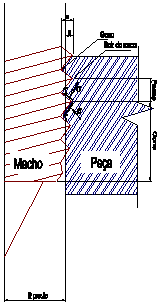

LMP>Linhas de Pesquisa>FURCON>Rosqueamento por Conformação
OBJETIVOS Este trabalho tem por objetivo estudar os fundamentos do processo de rosqueamento
por conformação através da análise de resultados
de ensaios verificando a influência de diversos fatores sobre o processo. O rosqueamento por conformação de buchas escoadas substitui satisfatoriamente em muitos casos a aplicação da porca soldada, parafusos de rosca soberba, e outros casos de rosqueamento em chapas de pouca espessura. As características do processo de rosqueamento por conformação dependem das variáveis de trabalho e dos parâmetros de entrada empregados. Como variáveis principais temos a velocidade de conformação e o diâmetro do furo inicial, e como parâmetros o diâmetro da ferramenta, a espessura da chapa, o material da chapa, condutividade térmica, resistência à deformação, material da ferramenta e lubrificante empregado. As características do processo são avaliadas basicamente pelo momento torçor e pela forma do filete produzido. RESULTADOSAvaliam-se os resultados de trabalho pelas dimensões das roscas,
qualidade superficial das roscas, resistência das roscas e pelo desgaste
da ferramenta. As principais vantagens deste processo são:
 |
| Contato: FURCON Walter Lindolfo Weingaertner Prof. Dr.-Ing |
Última Atualização 23.06.2006 |